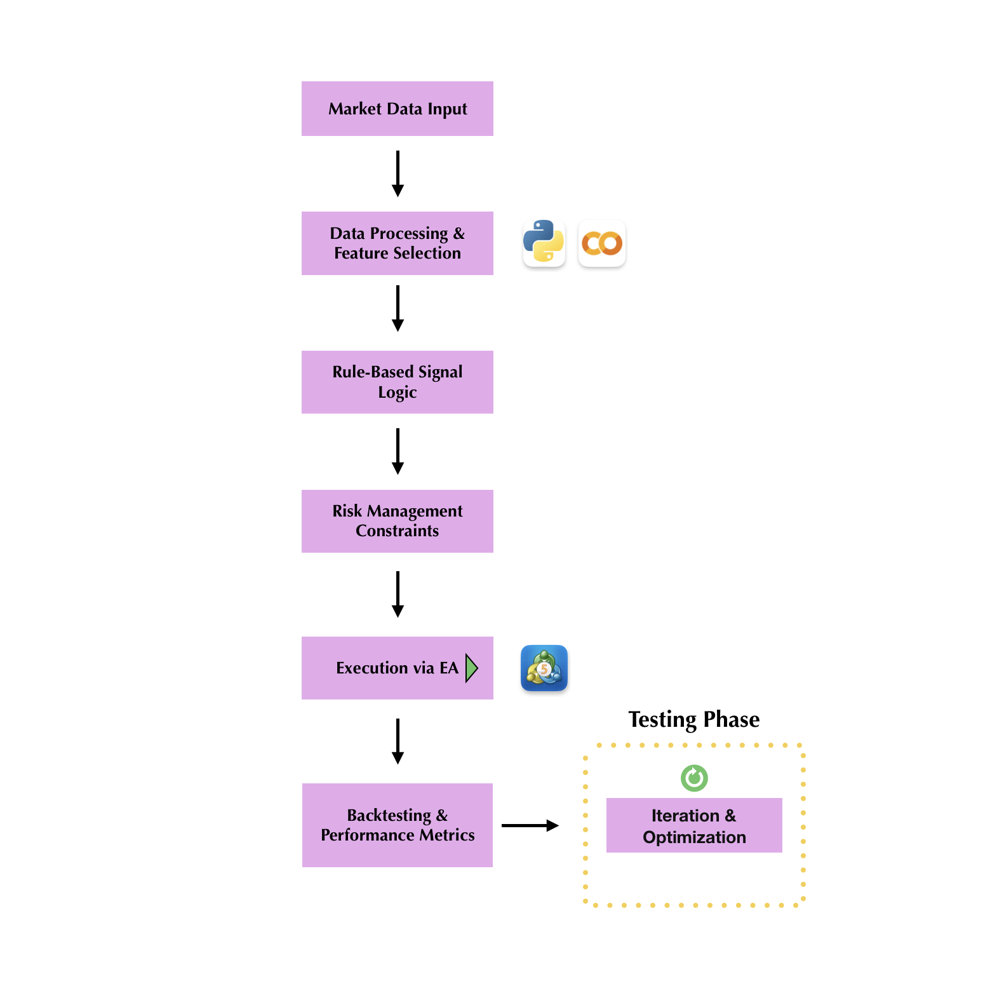

Quantitative Engineering & Algorithmic Trading
End-to-End Quantitative Research & Execution by Grecia Zarella Alvarez Leyva

This project was built from scratch to investigate the most effective way to analyze financial markets across multiple timeframes. Based on the theory by Brian Shannon (2008), the system operates on the core principle that "higher timeframes define context, not permission." The research focused on translating discretionary trading concepts into a robust, rule-based execution system.
The system evolved from a Python prototyping phase to a production-grade MQL5 Expert Advisor (EA). The architecture is designed to minimize emotional bias and maximize algorithmic discipline:
The following logic manages the ATR-based Stop Loss and the position sizing engine, ensuring that risk is governed algorithmically on every trade:
My research concludes that forcing alignment across too many timeframes suppresses valid opportunities. This automated system achieves a critical balance: utilizing higher-timeframe context for safety, while maintaining the agile execution required for swing trading. This project demonstrates not just coding capability, but a deep understanding of market mechanics and the transition from theoretical research to live systems engineering.